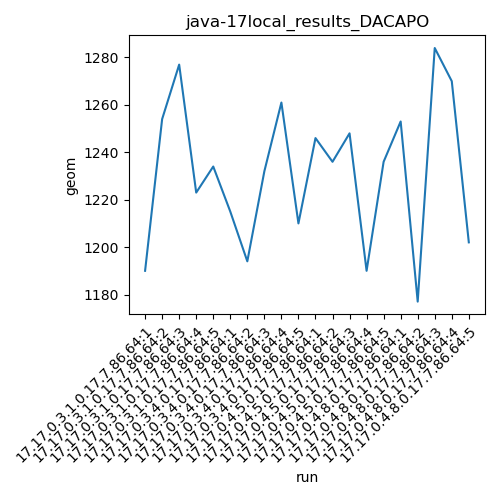
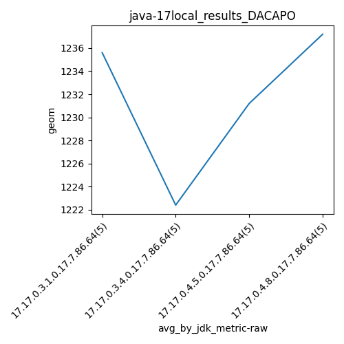
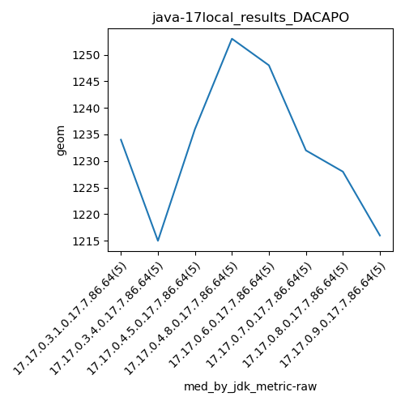
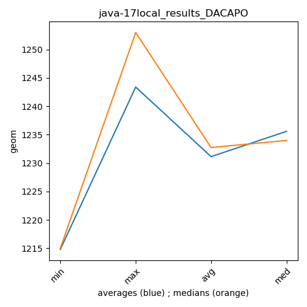

java-17 DACAPO
Context at bottom
/home/jvanek/git/benchmarks-in-nested-virtualisation-toolchain/final_results/local_results/local_results_J2DBENCH
java-17
DACAPO
/home/jvanek/git/benchmarks-in-nested-virtualisation-toolchain/final_results/local_results/local_results_SPECJBB
java-17
DACAPO
/home/jvanek/git/benchmarks-in-nested-virtualisation-toolchain/final_results/local_results/local_results_RADARGUNs1
java-17
DACAPO
/home/jvanek/git/benchmarks-in-nested-virtualisation-toolchain/final_results/local_results/local_results_RADARGUNs3
java-17
DACAPO
/home/jvanek/git/benchmarks-in-nested-virtualisation-toolchain/final_results/local_results/local_results_JMH
java-17
DACAPO
/home/jvanek/git/benchmarks-in-nested-virtualisation-toolchain/final_results/local_results/local_results_DACAPO
java-17
DACAPO
local_results_DACAPO
final score
Expected number of java-17 JDKs: 9
1st avgmed_alljdks_metric:
/home/jvanek/git/benchmarks-in-nested-virtualisation-toolchain/final_results/result_processing.py /home/jvanek/git/benchmarks-in-nested-virtualisation-toolchain/final_results/local_results/local_results_DACAPO geom False
values: [1190, 1254, 1277, 1223, 1234, 1215, 1194, 1232, 1261, 1210, 1246, 1236, 1248, 1190, 1236, 1253, 1177, 1284, 1270, 1202, 1248, 1227, 1206, 1268, 1268, 1260, 1224, 1232, 1283, 1198, 1192, 1175, 1248, 1228, 1283, 1227, 1216, 1210, 1198, 1223]

Expected number of iterations: 5
final number of values: 40 out of 45
Pass rate: 88.9%
values: (1175, 1284, 1231.15, 1232)

** accuracy from all jdks and runs
more is better
MIN: 1175
MAX: 1284
AVG: 1231.15
MED: 1232
Relative differences 1:
MIN-MAX: 8.0 %
MIN-AVG: 5.0 %
MIN-MED: 5.0 %
MAX-MIN: -9.0 %
MAX-AVG: -4.0 %
MAX-MED: -4.0 %
AVG-MED: 0.0 %
stored to java-17.properties. sort | uniq that!
2nd avgmed_by_jdk_metric:
values: [1235.6, 1222.4, 1231.2, 1237.2, 1243.4, 1239.4, 1225.2, 1214.8]

values: [1234, 1215, 1236, 1253, 1248, 1232, 1228, 1216]

values: (1214.8, 1243.4, 1231.15, 1235.6)
values: (1215, 1253, 1232.75, 1234)

** accuracy from all jdks where runs were avged
more is better
MIN: 1214.8
MAX: 1243.4
AVG: 1231.15
MED: 1235.6
Relative differences 1:
MIN-MAX: 2.0 %
MIN-AVG: 1.0 %
MIN-MED: 2.0 %
MAX-MIN: -2.0 %
MAX-AVG: -1.0 %
MAX-MED: -1.0 %
AVG-MED: 0.0 %
stored to java-17.properties. sort | uniq that!
** accuracy from all jdks where runs were medianed
more is better
MIN: 1215
MAX: 1253
AVG: 1232.75
MED: 1234
Relative differences 1:
MIN-MAX: 3.0 %
MIN-AVG: 1.0 %
MIN-MED: 2.0 %
MAX-MIN: -3.0 %
MAX-AVG: -2.0 %
MAX-MED: -2.0 %
AVG-MED: 0.0 %
stored to java-17.properties. sort | uniq that!
pass rates:
local_results_DACAPO=88.9%
Context:
- local_results
- DACAPO